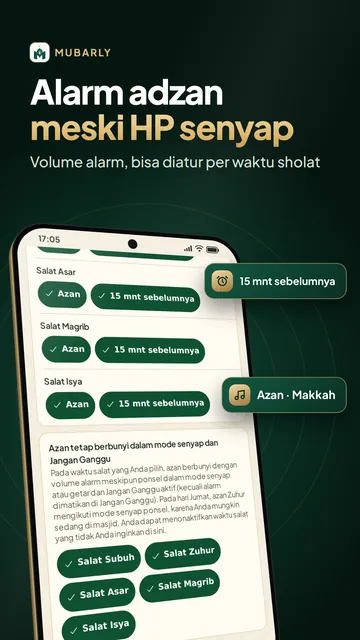
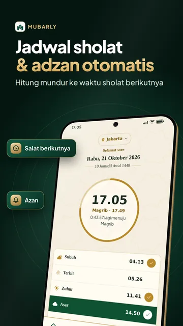
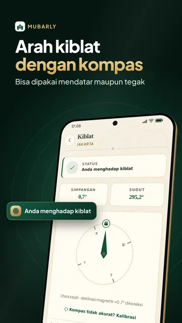
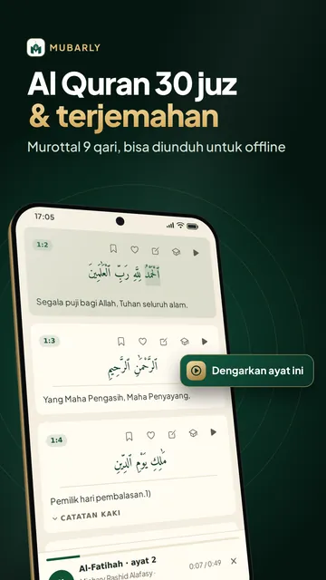
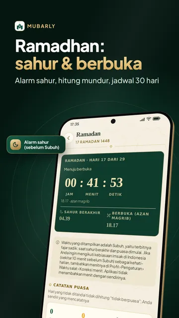
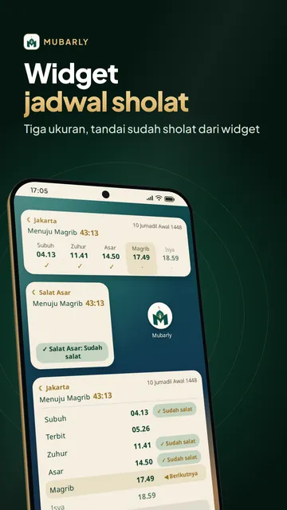
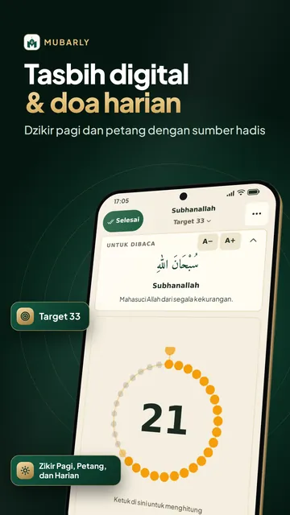
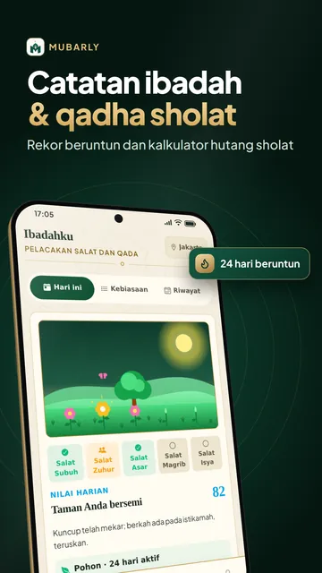

Azan tetap berbunyi saat senyap
Azan berkumandang dengan volume alarm di setiap waktu sholat, bahkan saat mode senyap dan Jangan Ganggu.
Dengarkan azan dengan volume alarm, bahkan saat mode senyap
Notifikasi adzan tidak bunyi saat HP senyap? Di Mubarly, adzan bisa berbunyi dengan volume alarm, juga dalam mode senyap atau Jangan Ganggu, sementara jadwal sholat, pengingat sholat, Al Quran 30 juz dan kompas kiblat tetap bisa dipakai offline.


Mubarly
01
Volume alarm, bisa diatur per waktu sholat

02
Bisa dipakai mendatar maupun tegak

03
Murottal 9 qari, bisa diunduh untuk offline
Mubarly
Azan berkumandang dengan volume alarm di setiap waktu sholat, bahkan saat mode senyap dan Jangan Ganggu.
20 bahasa, termasuk Hausa, Somali, Kurdi, Pashto, Punjabi, Kirgiz dan Uzbek.
Hanafi, Syafi'i, Maliki dan Hanbali: ashar, puasa dan qadha mengikuti mazhab pilihan Anda.
Waktu dihitung di ponsel dengan metode negara Anda. Tanpa internet, tanpa akun.
Layar jadwal sholat, azan, Al-Qur'an, kiblat, dzikir dan doa tidak pernah menampilkan iklan.
Tanpa lokasi di latar belakang, tanpa kamera atau mikrofon, dan data Anda tidak dijual.
Mubarly
Mubarly adalah aplikasi islami untuk jadwal sholat dan adzan otomatis sesuai lokasi Anda, lengkap dengan Al Quran, arah kiblat, doa harian dan dzikir. Alarm adzan bisa tetap berbunyi saat HP dalam mode senyap atau Jangan Ganggu, dan dapat diatur per waktu sholat. Jadwal dihitung di ponsel dan tetap tersedia offline.
Premium
Semua bagian ibadah gratis. Tidak ada iklan layar penuh, dan tidak ada iklan di layar Al Quran, adzan, kiblat, tasbih digital, doa dan Ramadan. Premium menghapus semua iklan dan menambah Mode Hafalan, Tidur & Tafakur (suara penenang, tasbih sebelum tidur, latihan napas) serta tema kompas dan tasbih; atau tonton video singkat untuk membukanya selama beberapa jam.
Privasi: tanpa akun (masuk dengan Google opsional, untuk cadangan dan sinkronisasi), tanpa akses lokasi di latar belakang, kamera atau mikrofon; Mubarly tidak menjual data Anda.
Jadwal sholat & adzan otomatis




22 · Jadwal sholat per kota
Mubarly
Ya. Jadwal sholat, azan, kompas kiblat, Al-Qur'an, doa dan dzikir gratis, dan layar ibadah tidak pernah menampilkan iklan. Premium bersifat opsional untuk menghapus iklan dan menambah fitur.
Ya. Mubarly mengumandangkan azan dengan volume alarm di setiap waktu sholat, juga saat mode senyap dan Jangan Ganggu, dan bisa dihentikan dari notifikasi.
Di ponsel Anda, untuk lokasi Anda, dengan metode perhitungan yang dipakai di negara Anda. Metode dan perhitungan ashar (Hanafi atau mazhab lain) bisa diubah di pengaturan.
Keempat mazhab: Hanafi, Syafi'i, Maliki dan Hanbali. Ashar, puasa, qadha dan hukum lainnya mengikuti mazhab yang Anda pilih.
Ya. Jadwal sholat, azan dan teks Al-Qur'an berfungsi tanpa internet, dan tidak perlu akun.
Gratis · tanpa internet · 20 bahasa · empat mazhab